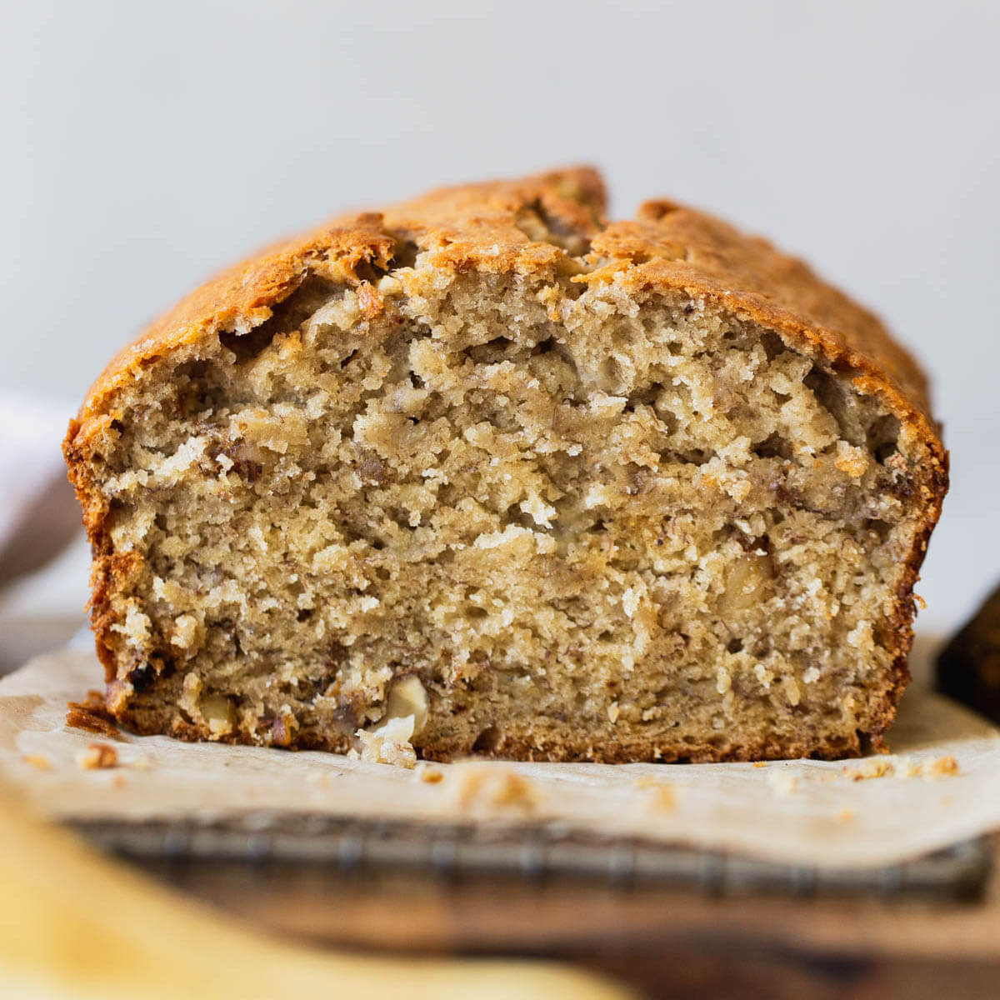

Classic Banana Bread recipe
Ingredients
Banana bread
- Unsalted butter tends to work better than oil.
- A mix of brown sugar and granulated sugar.
- Two eggs and some pure vanilla extract.
- Two cups of mashed bananas.
- Two cups of all-purpose flour
- Mix together a bit of baking soda and baking powder.
- Add a teaspoon of cinnamon and salt.
Mixing Instructions
- Cream the butter and sugars together
- Mix the eggs and vanilla extract.
- Mix in the mashed banana.
- Whisk together the dry ingredients.
- Mix the dry ingredients into the wet ingredients.
Directions
- Preheat oven to 425 degrees.
Oven Instructions
- Spray a 9x5 loaf pan with cooking oil spray.
- Line the pan with parchment paper.
- Use a non-stick spachula to scrape the batter into the pan.
- Let the batter sit for 5 minutes to self-level.
- Place in oven for 20 minutes, or until you can stick a toothpick in the loaf and it comes out clean.
- Let the bread cool in the pan for 20 minutes.
- Take bread out of pan and place it on a wire rack.
- Enjoy!
View the Original Recipe Online
Contact
Send me and email!
University of Montana
32 Campus Drive
Missoula, MT 59812